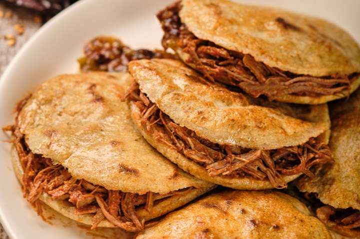

Gorditas

Gorditas
Gorditas are thick corn tortillas that have a pocket in the middle made for stuffing with delicious Mexican fillings.
Ingredients
- Maseca
- Warm water
- Salt
- Carne asada
Steps
- Mix maseca with water and salt and roll into little balls
- Lightly flatten maseca ball between two sheets of plastic wrap using a tortilla press
- Remove the flattened masa from the plastic wrap and place it on a hot griddle
- When masa begins to inflate remove it from the griddle and place it on a plate covered by a light towel
- When the masa has cooled enough to hold it, use a knife to cut a slit down one side making a pocket
- Fill with choice of ingredients
Back